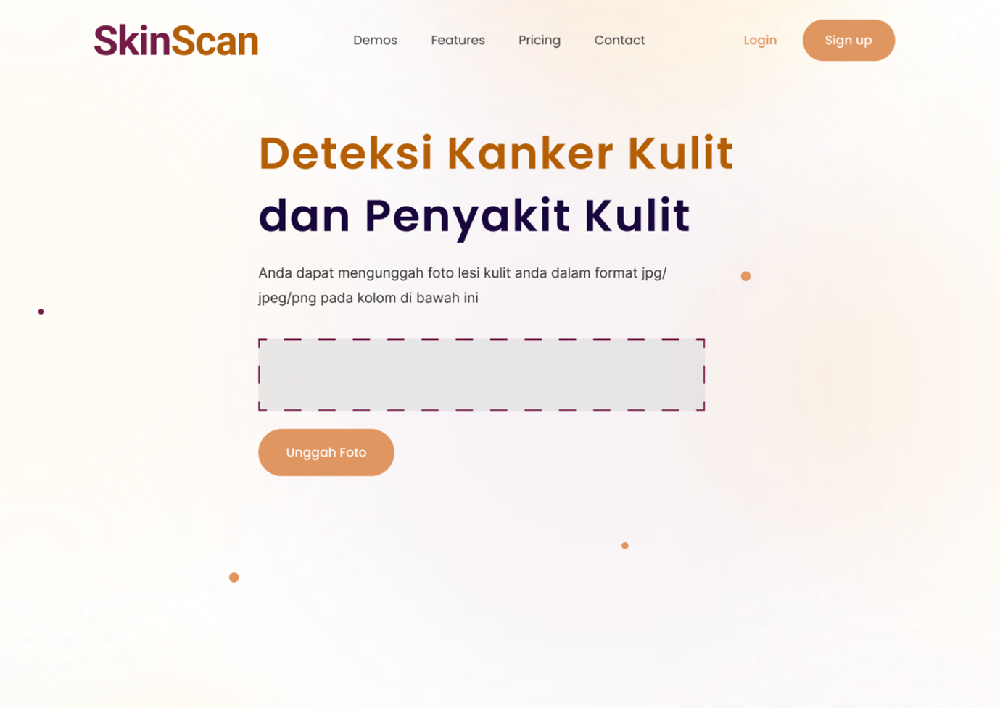
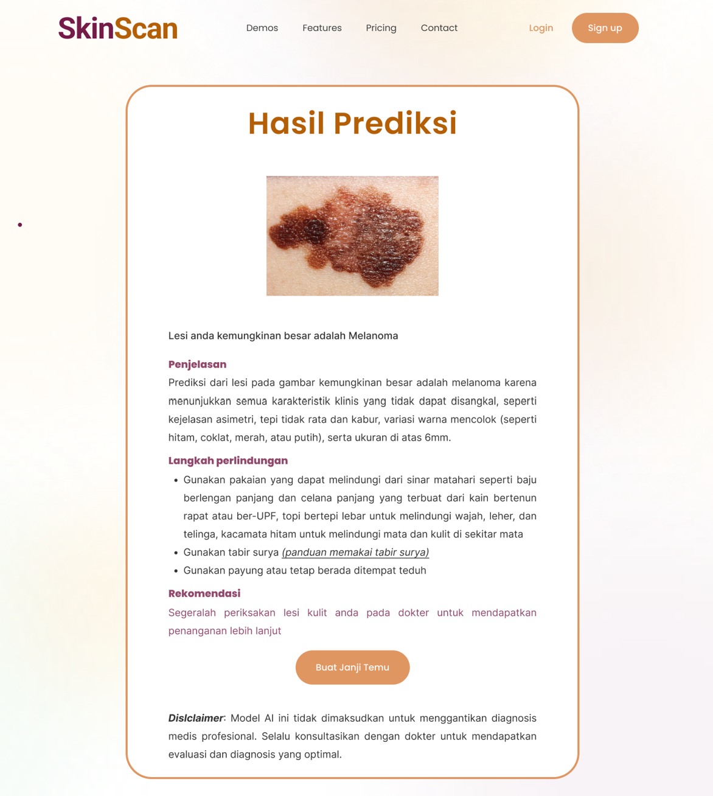
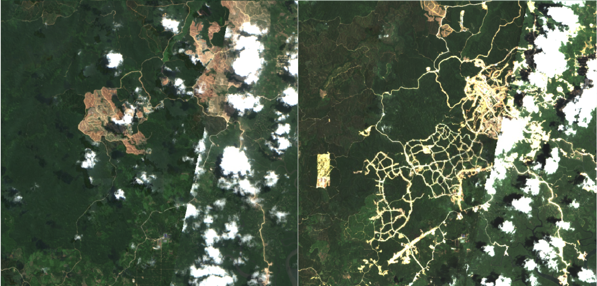
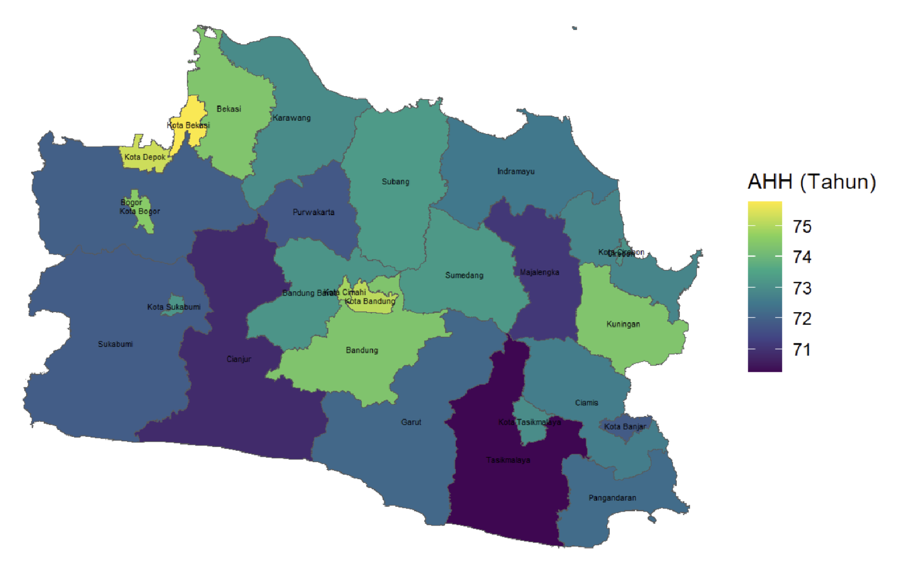
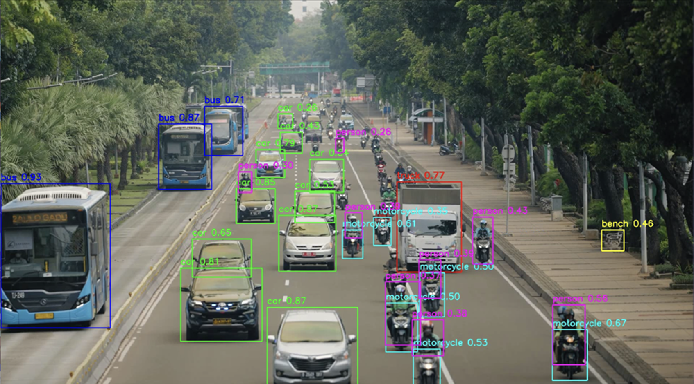
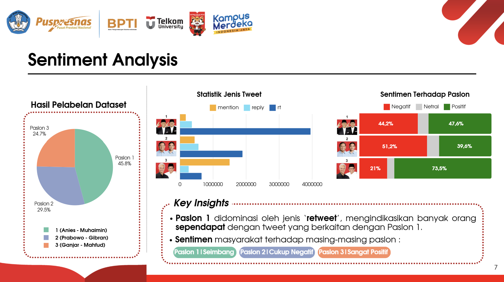
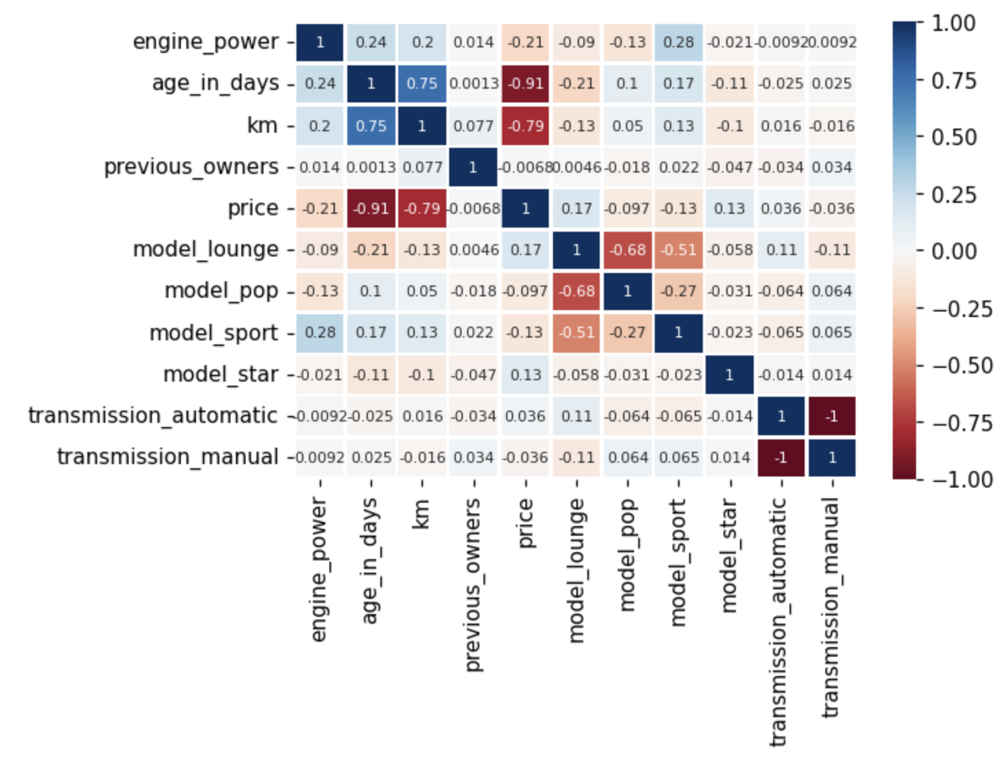
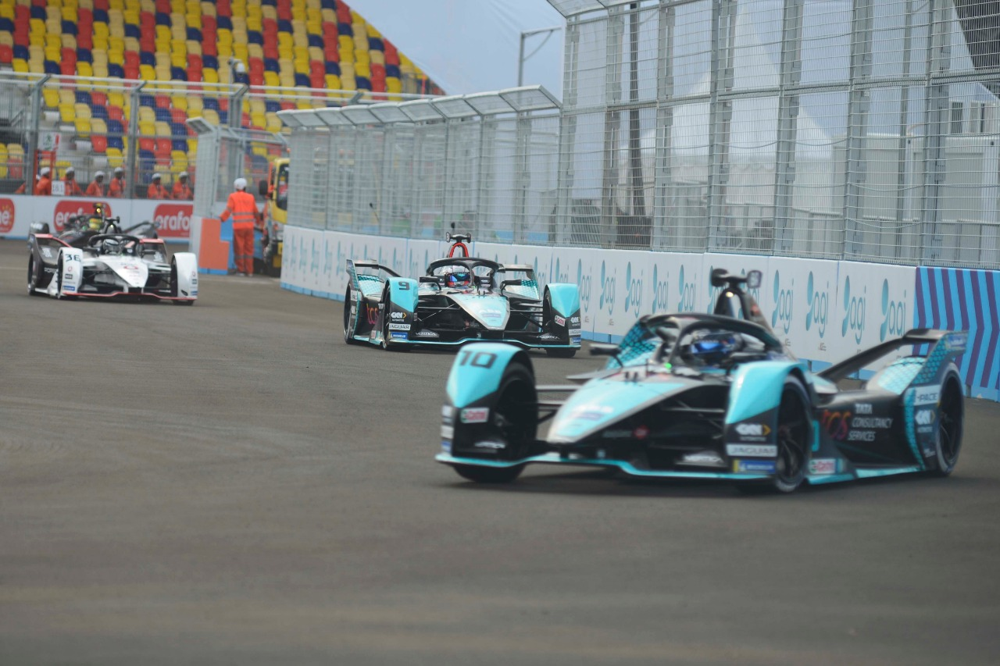

October, 2024
Collaborated with a diverse team from backgrounds in health, business, and technology, we developed a prototype of a skin cancer detection app capable of identifying over 13 cancer types and other skin conditions.



Collaborating with Rifqi and Favian, we utilized satellite imagery of IKN (Indonesia’s New Capital) from 2019 (before construction) and 2024 to compare and assess the extent of deforestation using fKAN Classification Algorithm
Worked with four others to develop Artificial Neural Network (ANN) and Convolutional Neural Network (CNN) models for heart failure mortality data and compared their performance. The analysis concluded that the CNN model outperformed the ANN model. In the next stage, synthetic data generation was also carried out using Generative Adversarial Networks (GAN).

Monitoring Sustainable Development Goals (SDGs) indicators can be conducted using Official Statistics, as demonstrated in the analysis of Life Expectancy (LE) in West Java. LE reflects the estimated lifespan of the population. Multiple Linear Regression is insufficient for addressing spatial factors, leading to the use of Spatial Regression methods. Moran's I test indicates spatial dependency in LE, Average Years of Schooling (RLS), Adequate Housing (HLT), Healthcare Workers (JTK), Unemployment Rate (TPT), Poverty (PVT), and Per Capita Expenditure (PGLR). The best model is Spatial Cross Regressive (SCR) with RLS, HLT and TPT as predictors, achieving an AIC of 70.56. Active government and community roles are crucial for improving LE and supporting SDGs.

This study explores the application of the YOLOv5 model for real-time traffic
object detection, focusing on the dynamic environment of Jalan Merdeka Barat in
Jakarta. The 12-second video analyzed captured various vehicle types, including
motorcycles,cars,and other objects.YOLOv5 detected 7,095 objects across frames
with significant accuracy and processing speed,and initial detections of 7,745 were
refined to remove overlaps through Non-Maximum Suppression(NMS), resulting in
cleaner,non-redundant bounding boxes.However,the model exhibited challenges in
detecting distant objects and differentiating between similar objects,likely due to the set confidence
threshold and dataset limitations.
It also showed occasional inconsistencies in detecting stationary and moving objects
across frames.

Worked with Rifqi Hafizuddin and Adawia Ananda for Satria Data 2024 Big Data Challenge competition to analyze tweets from the 2024 Indonesian Presidental Election using sentiment analysis, topic modelling and social network analysis

My dashboard projects created using tableau

During my internship at PT Allianz Utama Indonesia, I conducted an analysis on factors influencing insurance policy renewal using binomial logistic regression. This project involved examining customer data and policy characteristics to identify key determinants of renewal decisions.
I analyzed variables such as customer demographics, policy types, payment history, and claims frequency to evaluate their impact on renewal likelihood. The findings were visualized and interpreted to generate actionable insights, enabling the company to develop targeted strategies for improving renewal rates. Recommendations included optimizing customer segmentation, designing personalized renewal offers, and addressing potential obstacles in the renewal process.
Unfortunately, due to data confidentiality, the detailed results of this project cannot be disclosed.

Internship’s innovation project at PT Swalayan Sukses Abadi (The Foodhall) which is under the management of PT Mitra Adiperkasa Tbk. Made an analysis on 4 months (January - April 2024) transactional data at the two foodhall’s minimarkets, Daily Foodhall Menara Astra and Daily Foodhall Istana Sahid Sudirman. Visualized, compared, and analyzed the revenue generated, most purchased items, transaction date (to find which month, day, and time are the busiest in terms of transaction traffic), and other aspects on both stores to create new insights and recommendations. Performed market basket analysis to see which products are related and great to sell together, then proposed promo or bundle recommendations on some items to improve sales. Unfortunately, because the data is confidential, this project can’t be shared.

Worked with 3 other people to Analyzed hoax data from mafindo by visualizing the text data, determining the best model and classifying the text data based on the model.

Worked with 3 other people, applied Exploratory Data Analysis and searched for insights from the property data in Indonesia in order to answer the question, Which city has the best opportunity to build a property business?

Worked with 4 other people to create a database for airport system with SQLite.

Worked with 2 other people, applied time series analysis to forecast TLKM stock price with ARIMA Model using R programming language.

Worked with 4 other people, predicted used car price with linear model and searched for insights.

Worked with 3 other people, analyzed the sentiment of public about Formula E topic in Indonesia during the event. The social media data is obtained from Twitter (Currently called X) API.